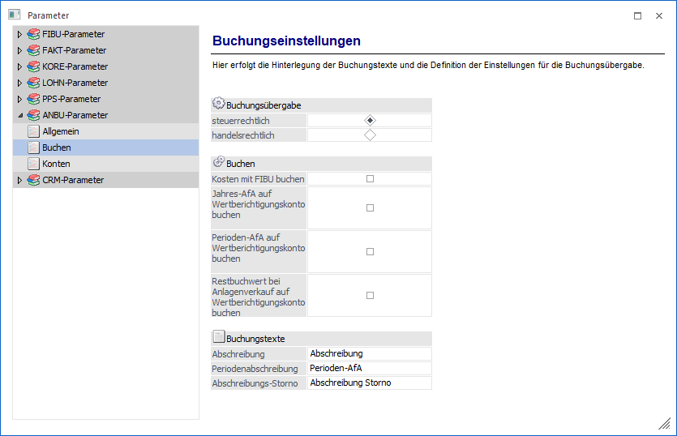
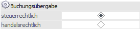
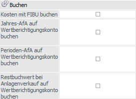
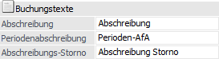

Über den Bereich "ANBU-Parameter - Buchen" können die u.a. Einstellungen für die Buchungsübergabe definiert werden.
Hinweis
Standardmäßig wird das Fenster in einem "Lesemodus" geöffnet, d.h. es können die bestehenden Einstellungen kontrolliert, Änderungen allerdings nicht durchgeführt werden. Hierfür muss zunächst mit Hilfe des Buttons "Bearbeiten" der "Bearbeitungsmodus" aktiviert werden. Alternativ kann diese Aktivierung auch über das Kontextmenü der rechten Maustaste (Funktion "Applikation xxx bearbeiten") erfolgen.

Buchungsübergabe

Ø Buchungsübergabe steuerrechtlich / handelsrechtlich
Mit diesen Radiobuttons wird entschieden, welche Perioden- und Jahresabschreibung in die Finanzbuchhaltung übergeben werden soll. Es kann entweder die steuerrechtliche oder die handelsrechtliche Abschreibung in die FIBU übergeben werden. Voreingestellt ist "steuerrechtlich".
Hinweis
Der Radiobutton "handelsrechtlich" ist nur bei einer gültigen CWL ANBU - Lizenz aktiv.
Buchen

Ø Kosten mit FIBU buchen
Durch Aktivieren bzw. Deaktivieren der Checkbox kann bestimmt werden, ob die buchmäßigen Abschreibungswerte für die Kostenrechnung in den FIBU-Stapel mit übergeben werden oder nicht. Ist dieses Feld aktiv, dann ist keine kalkulatorische Abschreibung möglich.
Hinweis - Periodenabschreibung mit der Option "Kosten mit FIBU buchen"
Wurde in den Anlageparametern "Kosten mit Fibu buchen" aktiviert, erhalten Sie mit dem Stapel der Periodenabschreibung auch die Journalzeilen für die Kostenrechnung. Die Eingabe der relevanten Kostenrechnungsdaten (Kostenstelle) erfolgt im Anlagestamm2. Im Falle einer fehlenden Kostenart wird die Kostenart aus dem Abschreibungskonto verwendet. Bei fehlenden Kostenstellen kommt eine Warnmeldung und der Buchungsstapel kann erst nach der Korrektur abgesetzt werden.
Pro Konto wird nur eine Buchungszeile im FIBU-Buchungsstapel mit der Abschreibungssumme erstellt und die unterschiedlichen KORE-Informationen werden in der KORE-Tabelle entsprechend aufgeteilt dargestellt und verbucht.
Ø Jahres-AfA auf Wertberichtigungskonto buchen
Wird diese Checkbox aktiviert, wird die Jahres-AfA auf das im Anlagenstamm hinterlegte Wertberichtigungskonto gebucht. So lässt sich eine indirekte Abschreibung realisieren.
Beispiel
WG: Maschine, Anschaffungswert 10.000,-, ND: 5 Jahre, Jahres-AfA: 2.000,-
FIBU-Konto: 7010, AfA-Konto: 0400, Wertberichtigungskonto: 0490
Die Zubuchung erfolgt in beiden Fällen gleich:
0400 Maschinen / 2800 Bank 10.000,-
Ist die Option nicht aktiviert, wird die Jahresabschreibung direkt auf dem Anlagenkonto erfasst:
7010 Abschreibung / 0400 Maschinen 2.000,-
Dadurch wird auf diesem Konto immer der aktuelle Buchwert ausgewiesen.
Wird die Option aktiviert, wird folgendermaßen gebucht:
7010 Abschreibung / 0490 kumulierte AfA Maschinen 2.000,-
So wird auf dem Konto 0400 immer der Anschaffungswert ausgewiesen; am Konto 0490 sammeln sich die jährlichen Abschreibungen. Erfolgt ein Anlagenabgang, kann in der FIBU mit
0490 kum. AfA Maschinen / 0400 Maschinen 10.000,-
die Anlage ausgebucht werden.
Ø Perioden-AfA auf Wertberichtigungskonto buchen
Wird diese Checkbox aktiviert, wird die Perioden-AfA auf das im Anlagenstamm hinterlegte Wertberichtigungskonto gebucht.
Ist diese Checkbox aktiviert, wird beim Anlagenverkauf für die Ausbuchung des Restbuchwertes das im Anlagenstamm hinterlegte Wertberichtigungskonto anstelle des FIBU-Kontos herangezogen.
Ø Restbuchwert bei Anlagenverkauf auf Wertberichtigungskonto buchen
Ist diese Checkbox aktiviert, wird das im Anlagenstamm hinterlegte Wertberichtigungskonto an Stelle des Anlagensachkontos beim Anlagenverkauf zur Ausbuchung des Restbuchwertes verwendet.
Buchungstexte

Ø Abschreibung
Der hier hinterlegte Text wird bei der Jahresabschreibung als Buchungstext in den FIBU-Buchungsstapel übernommen. Voreingestellt ist der Buchungstext "Abschreibung".
Ø Periodenabschreibung
Der hier hinterlegte Text wird bei der Periodenabschreibung als Buchungstext in den FIBU-Buchungsstapel übernommen. Voreingestellt ist der Buchungstext "Perioden-AfA".
Ø Abschreibungs-Storno
Der hier hinterlegte Text wird bei dem Stornieren der Abschreibung als Buchungstext in den FIBU-Buchungsstapel übernommen. Voreingestellt ist der Buchungstext "Abschreibung Storno".